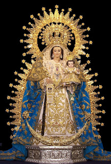
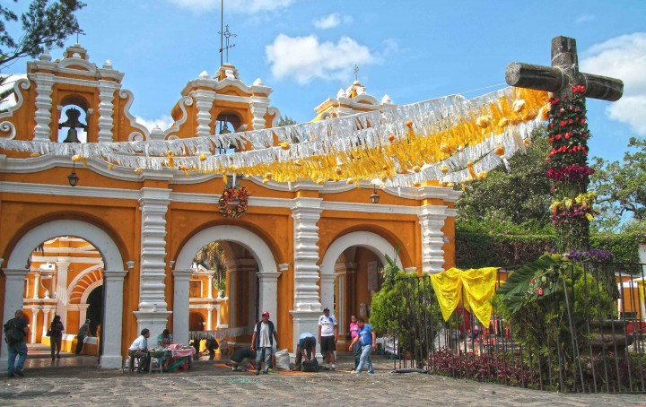
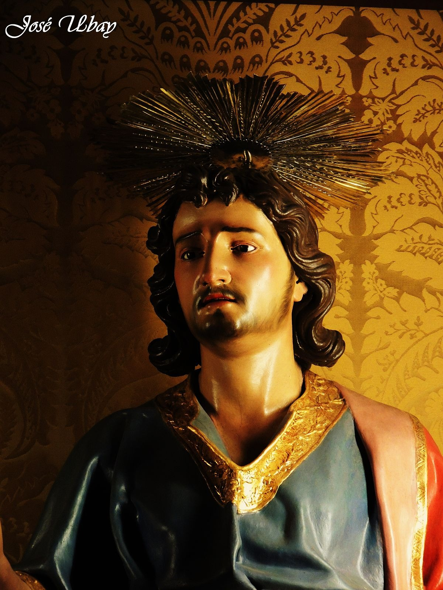
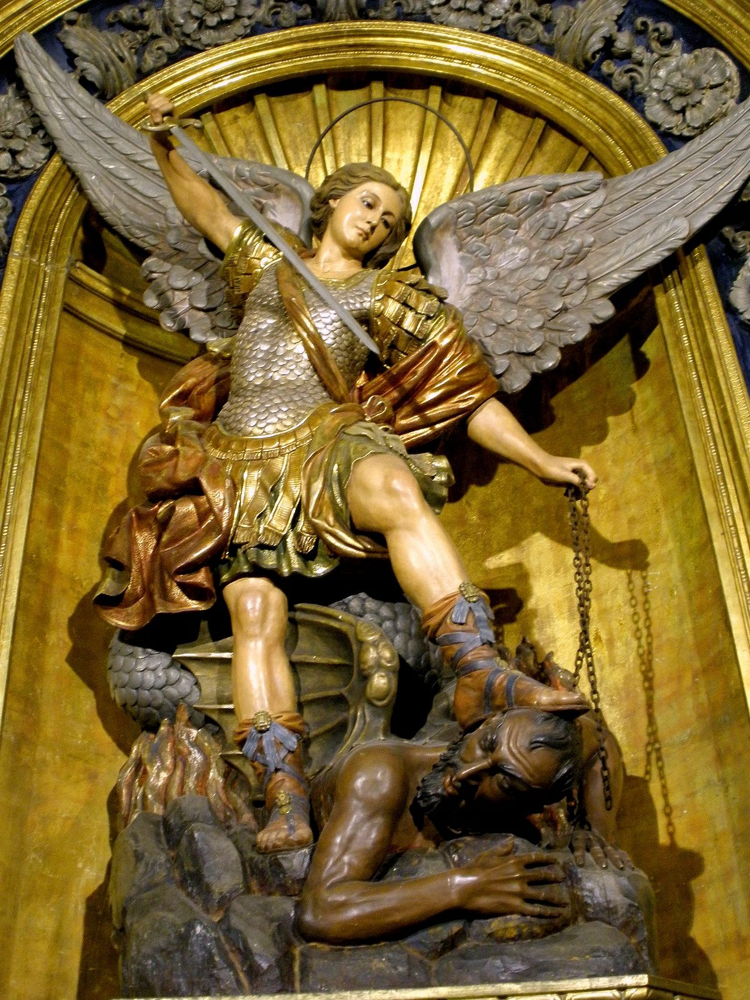
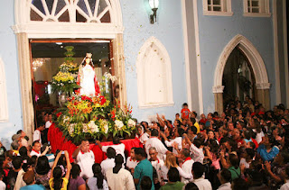
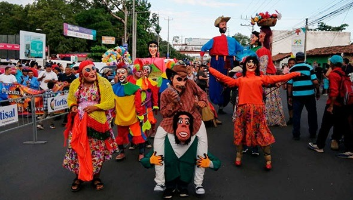

Explora la historia, cultura y tradiciones de esta región.

El territorio del departamento, de acuerdo con los restos arqueológicos hallados en el sector comprendido entre los ríos Lempa y Jiboa, estuvo poblado por comunidades mayances hasta fines del siglo XI. Por entonces se produjo la primera oleada invasora de pueblos nahuas mesoamericanos. Tras la ocupación tolteca, en cuyo proceso de asentamiento tendieron a mezclarse con las tribus locales, se establecieron cuatro siglos más tarde los nonualcos, pertenecientes
Distrito de Zacatecoluca Creado en el año 1786 comprende de los municipios de:
Distrito de Olocuilta Creado en el año 1786 comprende de los municipios de:
| |
|  |  |  |
|  |  |  |